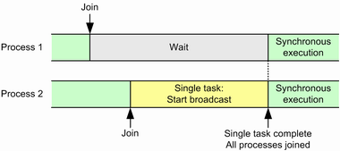

Use synchronization points to synchronize several processes running in parallel. You can, for example, wait until all processes have reached a synchronization point before you start a test signal broadcast to all DUTs.
Synchronization points work with a join mechanism. For each synchronization point, you define how many processes must join. You define also whether a special task must be executed by the first or the last joining process, the so-called "single task". Synchronization is complete if the defined number of processes has joined and single-task execution has been completed (if requested).
In the following example, two processes are synchronized. The last joining process must execute a single task to start a broadcast. The test continues after both processes have joined and the single task execution is complete.

Before you can use a synchronization point, you must create it via the command
When you create a synchronization point, you give it a name. This name is used by all other SPOint commands to identify the object.
You also define how many processes must join to complete synchronization. And you define whether the first joining process or the last joining process or none must execute a single task.
A timeout defines the maximum allowed duration of the synchronization procedure, starting with the first joining process. The expected number of processes must join within the defined time. If a single task execution is ordered, it must also be completed in time.
A synchronization point can be valid and visible within the entire instrument with all its subinstruments, or within a single subinstrument only. This validity area is called the scope. The name is unique within its scope. If you join a synchronization point, you join it within its scope.
The command defines also a polling interval for wait commands, see next section.
To join a synchronization point, you send the command
- Do single task (DST)
Execute a single task (for example start a broadcast). After completion of the task, report "single task done" via the commandCONFigure: SCSTools: SPOint: STDone? .
The single-task-done command is answered immediately with the current synchronization point state. Continue accordingly. - Ready (RDY)
Synchronization is complete. The required number of processes has joined. If a single task has been ordered, it is complete. You can continue all processes. - Not ready (NRDY)
The synchronization is ongoing and you need to wait. Send the commandCONFigure: SCSTools: SPOint: WAIT? .
The wait command is answered when the synchronization is complete (RDY) or if a polling timeout occurs (PTO) or if an error occurs. Continue according to the returned state. After a polling timeout, you need to send a new wait command.
- Ready, but single task missing (RSTM)
The required number of processes has joined, but single task execution is ongoing. The process ordered to perform a single task is not yet counted as "joined", because it has not yet reported the single task completion.
Nevertheless, the required number of processes has joined. So there are more processes than expected. - Timeout (TOUT, TSTM)
A timeout occurs if the synchronization is not completed within a certain time (setting of the synchronization point). Investigate which process caused the error and why. Maybe you need to adapt your script, for example increase the defined timeout. Or a one-time error occurred, for example a remote control computer crashed or a DUT hangs.
If no single task execution has been ordered, TOUT is returned for a timeout. If single task execution has been ordered, TSTM is returned. - NDEF
There is no synchronization point with the stated name.